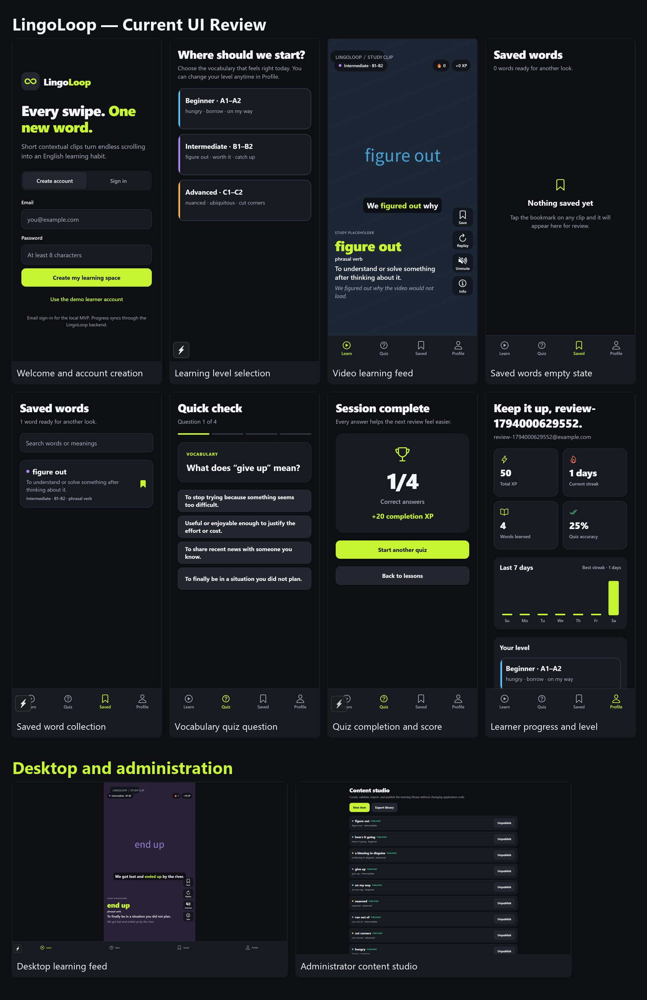

Every swipe.
One new word.
Short contextual clips turn endless scrolling into an English-learning habit. Explore lessons, save vocabulary, complete quizzes, and build a streak on Android and Chrome Web.

Full-screen clips, highlighted subtitles, replay, mute, and readable fallbacks.
Bookmark vocabulary and return to a searchable personal collection.
Unlock quick checks, receive immediate feedback, and earn completion XP.
Persistent accounts, streaks, level selection, and offline completion sync.
Current UI review
Ten real screens captured in Chrome: onboarding, feed, saved words, quiz, profile, desktop, and admin.

Run the full app
Clone the repository, then run npm install, npm run seed, and npm run dev. The Chrome app opens on port 7100 and the API on port 4000.
GitHub Pages is a preview and setup guide only. The full application needs its Node.js/SQLite backend. Android emulator QA is verified; iOS and non-Chrome browsers are outside the current scope.